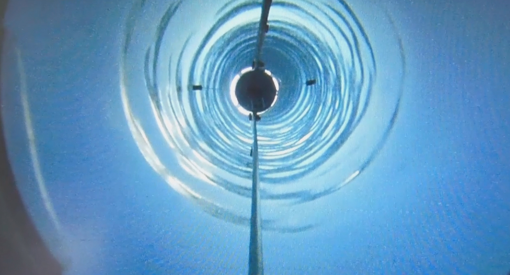
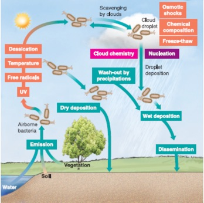
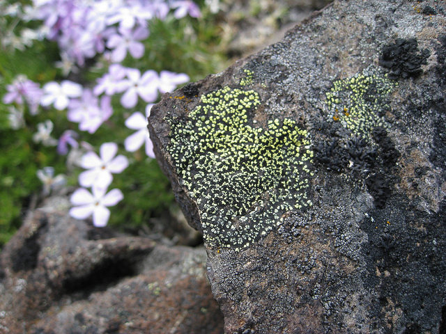
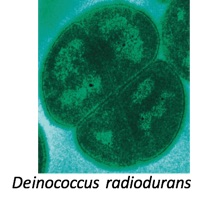
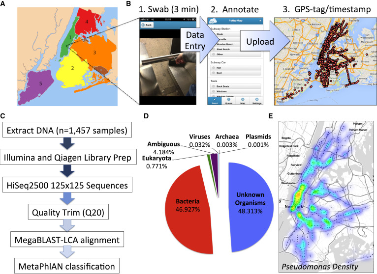

4 Microbes everywhere
Living microbes are found everywhere on earth, often in surprising places. This section looks at some examples of how ubiquitous and hardy they can be, both in nature and on our bodies. We’ll also discuss the technologies used to study the human microbiome.
The most important parts of our world are invisible. We can’t see air, but we can’t live without it. Similarly, our bodies are literally bathed in living, eating, reproducing lifeforms that we can’t see but that have profound effects on all that we do.
Life is tenacious, finding its niche, fighting for it, and stubbornly holding on in every environment it encounters. Living organisms inhabit the sky, deep underground, in the most barren habitats cold or hot anywhere on earth. The vast majority of these are microbes, so small we can’t see them, but small doesn’t mean irrelevant. In fact, the more that science understands about the invisible microbial world, the more it becomes clear that these uncountably numerous creatures exert a much bigger effect than we think.
Every traditional culture recognizes a role for the invisible, often translated with words like “spirit” or “life force”, sometimes with more expressive terms like “angels”, “demons”, “gods” or even, simply, “God”. It’s tempting to dismiss these invisible forces as so much superstition, as though truth is made only of things we can see, but of course that’s not quite true either. With the right instruments, we can see many invisible things; some of the greatest discoveries happen when a new gadget like a microscope or telescope makes people aware of a world that was previously hidden.
The invisible world of microbes is like that, with new, low-cost technologies showing us an incredible, rich, living universes of over 1 trillion species1 waiting to be explored.
The word “microbe” refers to any tiny organism that carries its own genetic information for purposes of propagating itself. Far too small to see with the naked eye, dozens could fit inside a typical human cell. Although it’s common to think of microbes synonymously with bacteria, in fact there are at least seven different types of microorganism:
- bacteria
- archaea: extremophile life forms that live and thrive in environments too challenging for bacteria
- protozoa
- algae
- fungi
- viruses
- a few multi-cellular animal parasites such as helminths.
Each of these has its own characteristic body type, means of reproduction, ways of moving around, and a deep, long history that is far older than humans.
Let’s look next at some of these environments and see the odd places where microbes have been found.
4.1 Microbes above and below
Scientists studying a water-filled fracture two miles underground at the Mponeng gold mine near Johannesburg, South Africa, discovered Candidatus Desulforudis audaxviator by accident, after noticing odd levels of hydrogen compounds, by-products of the activity of an isolated bacterial colony.2 Interestingly, this organism is a member of the same Firmicutes phylum that dominates human guts, though this particular bacterium evolved quite separately from us: it hasn’t been exposed to surface water for millions of years. A systematic study of its genome revealed that, unlike other bacteria that usually live in co-dependent colonies, this one can survive all by itself, feeding on tiny bits of radioactive energy from uranium decay in an environment far removed from all other energy sources. It’s not a great life: these creatures reproduce rarely, only once every few hundred or thousand years. But at least they don’t have to worry about being consumed by predators down there.
Subglacial Lake Whillans is a lake buried under more than 800 meters of ice in the West Antarctic. A careful underground bore hole inserted by a team from Louisiana State University in 2014 found almost 4,000 different kinds of bacteria and archaea surviving under that ice.3 The total bacterial count was not that different from what you’d find in surface lakes on other parts of the planet, a fact that is especially surprising for an environment that hasn’t had a ray of light in millions of years. The bacteria instead thrive on iron, sulphur, and nitrogen as energy sources. 4
Those may not be the deepest examples. A Cold War-era Soviet team drilling the world’s deepest hole, were forced to abandon the project in 1994 at 12,261 meters (or 7.5 miles) underground, when they hit temperatures above 180 °C (or 356 °F), too hot for their equipment. Apparently the conditions weren’t too hot for life, though: the nine-inch diameter Kola Superdeep Borehole 5 found 24 species of fossilized plankton among the two-billion-year-old rocks down there. Of course, fossils are not the same thing as living microbes, but even dead remnants at that depth is evidence of the tenacity of life.
Closer to the surface, a 2015 Chinese study6 showed that 32% of the variety in an ecosystem is associated with variation in the life below ground, mostly bacteria that sustain the ability of roots to take nutrients out of the soil. Just knowing the temperature or precipitation levels of an environment won’t tell you about the plants likely to be found there – the microbes matter too.
Even the sky contains living microbes. Scientists at the Institut de Chimie de Clermont-Ferrand in France have for decades sampled clouds to determine their precise contents, and sure enough: they find plenty of life there, usually between 1,000 and 10,000 bacterial cells per milliliter — not all that different from the amount you’d find in alpine snow. Like every living organism, these cells must soak up water and other nutrients, converting them into energy and various by-products, which collectively have a massive effect on the overall atmosphere, more than enough to affect climate. 7

source: ASMScience
The upper atmosphere is a harsh place for life: regular freezing and thawing, constant bombardment of UV radiation from the sun during the day, cold, subzero freezing temperatures at night, high speed, unpredictable winds that quickly disperse any colonies. Plus, at any moment these organisms can find themselves flushed to the ground in a rainstorm, where they’ll need to adapt again.
These extreme conditions are just another day in the life for one species commonly found in clouds, Pseudomonas syringae, which harbors a protein in its cellular wall that reacts to cold temperatures, alternately preventing and allowing a water molecule to turn into ice and back. It doesn’t take many of these reactions to generate precipitation. With so many cells constantly floating in the atmosphere, even small changes in concentration — perhaps due to human activity on the ground — can, at least theoretically, make the difference between rainfall and drought. How much of an effect is hard to say: you can imagine how difficult it is to study bacteria floating in the sky.
Our inability to access these environments is often the biggest reason we remain ignorant of the life that is found there, but there have been many attempts to learn more. Formal studies about the viability of microbes in space have been conducted since the early 1960s 8, when Apollo-era scientists wanted to understand the dangers of space travel, both to any humans in space as well as to those of us on the ground who might be exposed to any intersteller visitors.
Although new and bizarre extremophiles are discovered regularly, so far it appears that even the hardiest of known organisms have a tough time when directly exposed to solar ultraviolet radiation. But the particularly resilient spore-making Bacillus subtilis, for example, it is estimated could survive for at least six years if it were shielded somehow from direct sunlight, say embedded inside a meteorite.9
Several lichen species, including rock colonizing Rhizocarpon geographicum and Xanthoria elegans, and the vagrant Aspicilia fruticulosa, remained alive after ten days of direct UV exposure on board a European Space Agency spacecraft. 10 Some especially hardy cyanobacteria that came with the lichens didn’t survive, so perhaps space offers a better chance for multicellular life, which has the luxury of outer protective pigmented layers.

Traces of sea plankton, for example, have been found in space, on the surface of the International Space Station, where they are believed to have floated from the upper atmosphere. 11 Why?! How did they get there! Who knows!
What is known is that between a quarter and two-thirds of microbes in the air are entirely new and undiscovered organisms. A study of the “air microbiome” above New York City found bacteria and viruses that apparently originated in water, soil, vegetation, as well as in animals and humans, but even then few patterns emerge. Although there appear to be distinct microbial environments, on the land versus water, for example, overall many of these organisms are quite hardy and seem to find themselves migrating all over the place.
Still other microbes thrive in radioactive environments, like the dangerous interior of a nuclear reactor. Deinococcus radiodurans is an extremophile member of Phylum Deinococcus-Thermus that boasts an impressive built-in DNA repair mechanism that lets it survive cold, vacuum, acid, light, dehydration – you name it. It remains unbothered by radiation levels more than 1,000 times higher than would kill a human.
Microbes seem capable of living off just about anything. Ideonella sakaiensis, discovered in 2016 by a Japanese team12, can break down and metabolize plastic, just like the fungus Aspergillus tubingensis, found in 2018 in a garbage dump in Pakistan, which eats polyurethene in months rather than decades.13 The waxworm Plodia interpunctella, observed eating plastic in a lab probably owes its digestive abilities to other, as-yet-to-be-studied microbes.
In fact, many non-microbial organisms owe their most defining characteristics to microbes. Termites wood-eating abilities are thanks to a whole community of synergistic bacteria, archaea, and protists. Aphids can’t live off sap without Buchnera, a microbe that supplies them with essential amino acids. Some microbes even play a role in the mineralization of copper and gold.14

4.2 Microbes around you
You don’t have to go to extreme conditions to find unusual microbes. Microbes thrive whereever humans live, and they are in our everyday environment too. The PathoMap Project, studying DNA collected from the New York City area found that, like the air above, half of the microbes we walk past everyday are unknown to science. 15 Most of the organisms are apparently benign, with no obvious affect on humans one way or another. Even when known pathogens are found, including Yersinia pestis (Bubonic plague) and Bacillus anthracis (anthrax), the lack of reported infections indicates that probably these organisms are busying themselves for some other, unknown, and maybe even useful purpose16

Generally the microbes seem content to exist patiently with no apparent affect on the environment. A station flooded by Hurricane Sandy showed a similarity to a marine environment a year after the disaster.
Humans are the source of many unusual microbes in our environment. Regularly shedding 1.5 million skin cells per hour, your body’s leftover inhabitants can colonize a hotel room in less than six hours.17
Your household pets carry microbes, of course, but simply having a pet seems associated with different microbes in humans. One study showed that babies living in a household with pets have more Clostridiaceae, Veillonella (especially for dogs), Peptostreptococcaceae and Coprococcus. Cats in particular seemed associated with lower Bifidobacterium while dogs seemed to spell doom for Eggerthella.18
Nobody knows for sure, but perhaps the latest, best estimate is Locey and Lennon (2016)↩︎
http://earthsky.org/earth/diverse-microbes-found-deep-beneath-antarctic-ice-sheet↩︎
http://www.atlasobscura.com/places/kola-superdeep-borehole↩︎
Jing et al. (2015) and a summary here: https://macroecology.ku.dk/media/news_list/2015/09_biodiversity-belowground-is-just-as-important-as-aboveground/↩︎
http://www.asmscience.org/content/journal/microbe/10.1128/microbe.7.119.1↩︎
See an extensive 2010 review of everything known about space microbes in Horneck, Klaus, and Mancinelli (2010). Or skip to the handy summary table ↩︎
http://tass.ru/en/non-political/745635↩︎
http://www.sci-news.com/biology/ideonella-sakaiensis-bacterium-can-break-down-metabolize-plastic-03693.html↩︎
A later, more careful analysis indicates these particular pathogens may not actually be present: http://msystems.asm.org/content/msys/1/3/e00050-16.full.pdf↩︎
http://www.wsj.com/articles/big-data-and-bacteria-mapping-the-new-york-subways-dna-1423159629↩︎